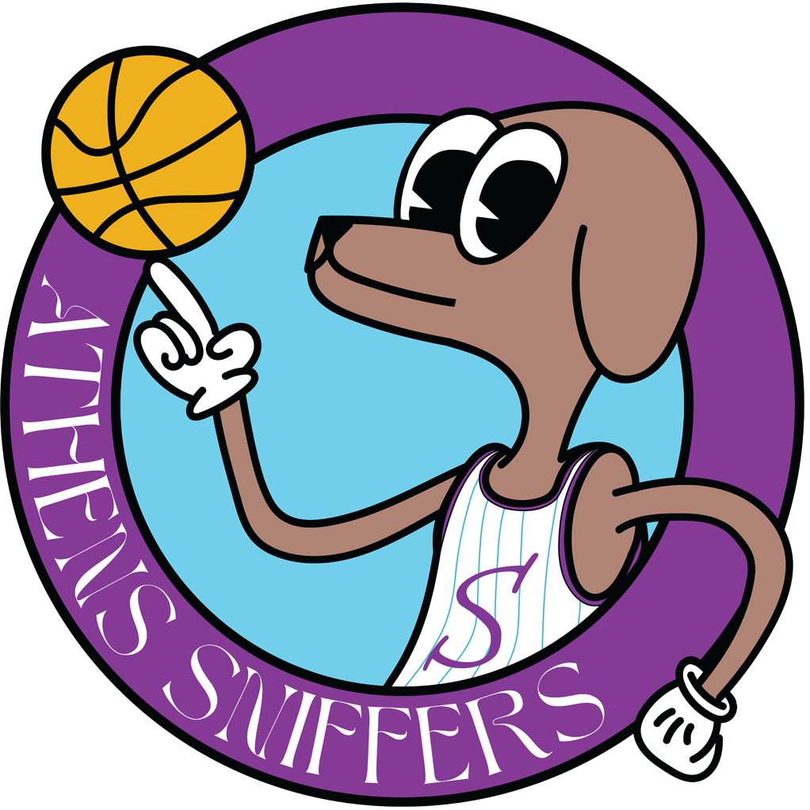
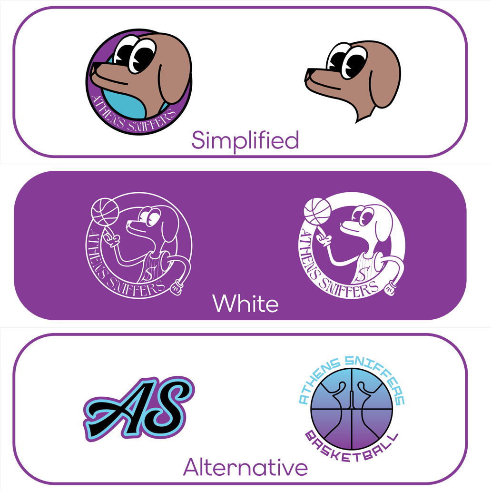
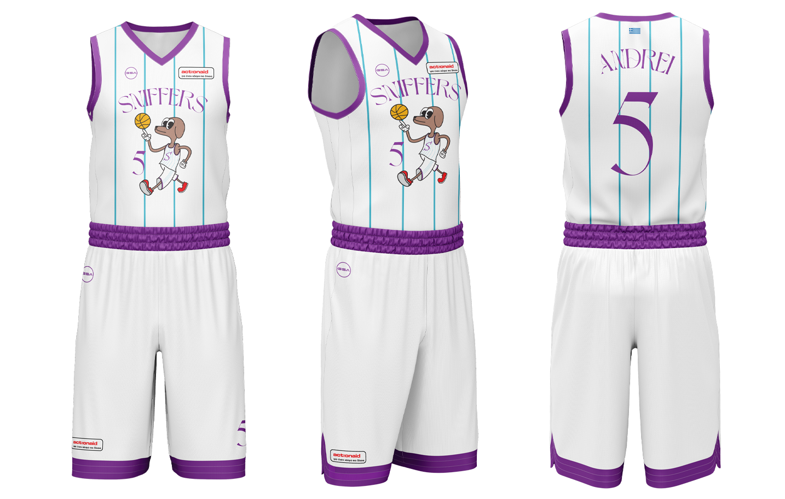
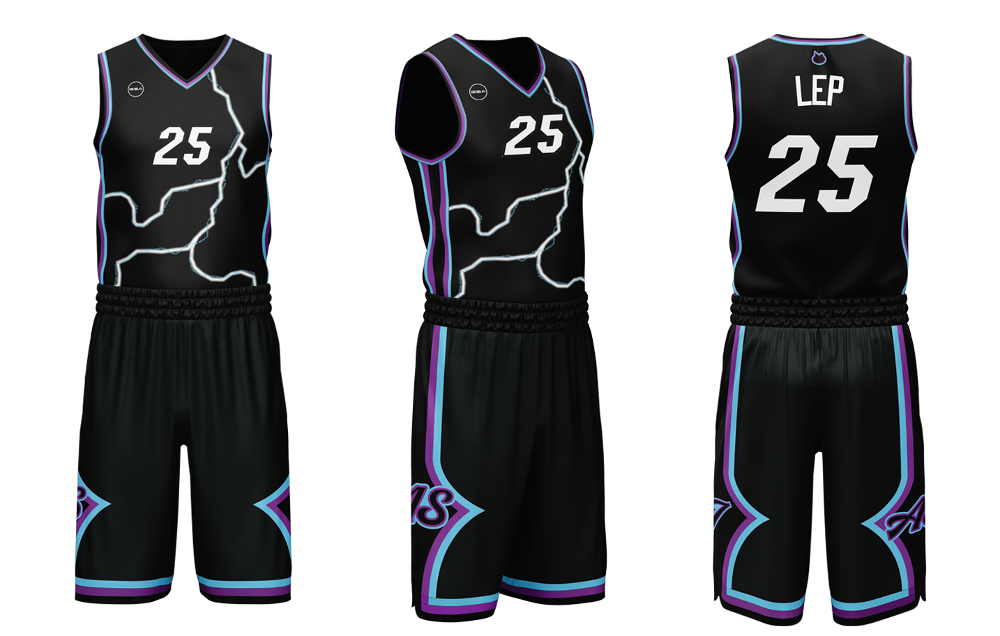
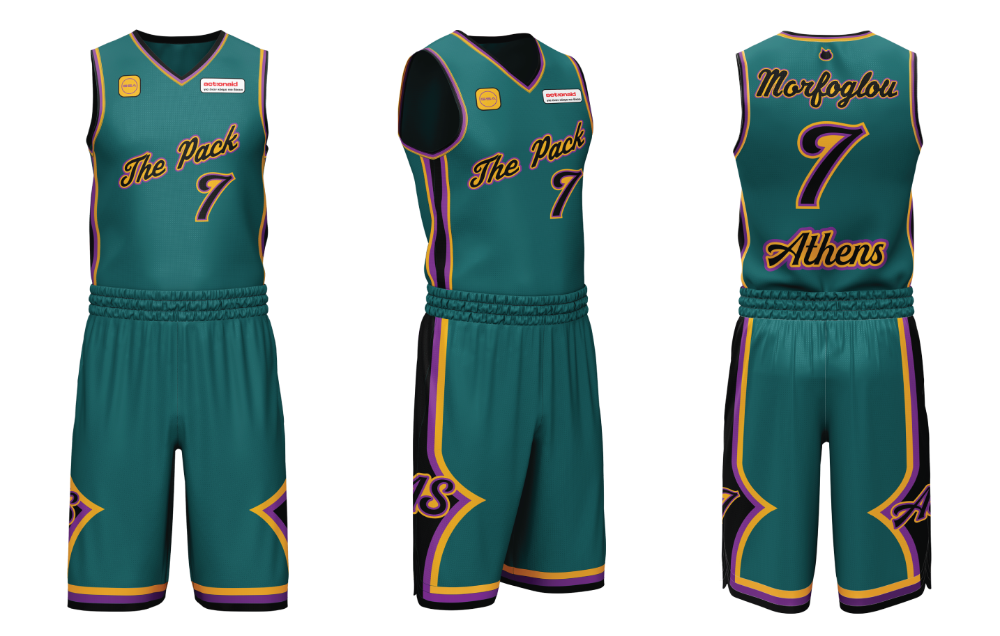

Athens Sniffers BC
Sports Team Branding
Sniffers is a team based in Athens. They are more than
just a basketball team — they’re here to connect
people, build friendships, and strengthen the local
community. Their goal is to make basketball a meeting
point where everyone feels part of the story.
The team’s logo
character —Abbey the
dog— hides a playful
reference to the Greek
slang expression
“myrodiás” (literally
“sniffer”), used to
describe someone who
thinks they know
everything but actually
doesn’t.
The team colors, blue and purple,
are inspired by the shades of the
Athenian sky at dusk, the time
when most of the games take
place.
The font contrasts with the
cartoony technique used
to design the character of
the dog, aiming to
highlight the variety and
intensity of different
cultures that coexist in
Athens.


The simplified version ensures clarity and recognition at small sizes or fast-moving contexts, like social media icons, merch tags, or scoreboard graphics. Stripping detail away preserves the core identity and keeps it readable instantly.
The white versions — both filled and outline — are designed for adaptability. Sport branding lives on constantly changing backgrounds: jerseys, courts, photography, video overlays. Having controlled monochrome options guarantees the logo remains visible, legible, and consistent without losing its character.
Alternative constructions, such as versions based on the first letters, create a secondary visual language. These act as shorthand identities — useful for caps, watermarks, or moments where the full logo would be too complex. They don’t replace the main mark; they extend its presence.

The Home version features the team’s mascot — a detail often loved by fans on jerseys from the 1980s. This nostalgic element is paired with thin linework, enhancing its retro character.

The Away jersey, named “Blackout,” humorously contrasts the elegant tone of the home kit. It is inspired by the common Athenian phenomenon where heavy rain often leads to power cuts. The design maintains an aggressive visual identity, with the team name integrated as a subtle lighting detail.

The third kit, “Statement Jersey,” is used for local derbies. The olive green color is drawn from Greek mythology, referencing the story of Athena and Poseidon competing for the city of Athens, where Athena’s gift of the olive tree ultimately secured her victory.
Social media plays a huge role in a team’s branding because it’s where the identity of the club is constantly seen, shared, and reinforced. It’s not just about posting updates — it’s about creating a consistent visual language that defines how the team feels to the outside world.
For Athens Sniffers, this approach is built through a strong and unified aesthetic system. All posts are set against a purple, slightly blue marble-like background, honoring Athens’ history and creating a recognizable and atmospheric base for every communication. Titles such as Game Day or Score use elegant typography to elevate key moments, while important information like game time or opponent names is designed in a more readable, functional style.
Players are presented with a heavy black-and-white filter, reducing them to a timeless, almost sculptural presence. The only color accents come from purple details, linking them back to the team identity and reinforcing visual consistency across every post.
Through this system, social media becomes more than communication — it becomes the team’s visual identity in motion.
Athens Sniffers’ tickets are not designed to be just a piece of paper — they are something fans will want to collect, keep, and treasure even after the match. Each ticket features moments from the game or highlights of a favorite player, turning it into a souvenir rather than just an entry pass to the arena.